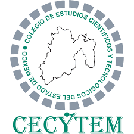

En esta pagina web se estara hablando de todo el conocimiento que se obtuvo durante el primer parcial del Cecytem plantel Cuautitlan, son 5 materias de las que hablare dando contexto a los temas que me dieron y mis aprendizajes, al final del resumen de cada una de las materias se estara realizando un examen de 20 preguntas de Quimica, Ingles y Implementa Software de Sistemas Informaticos.
Ingles
Ciencias Sociales
Lengua y Comunicacion